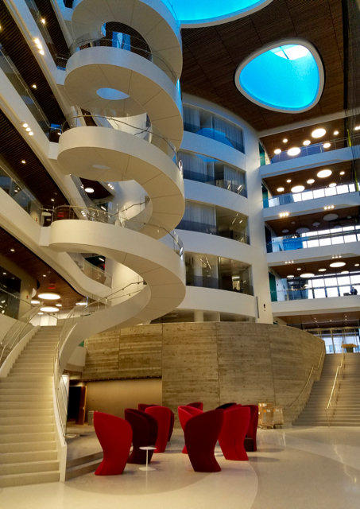
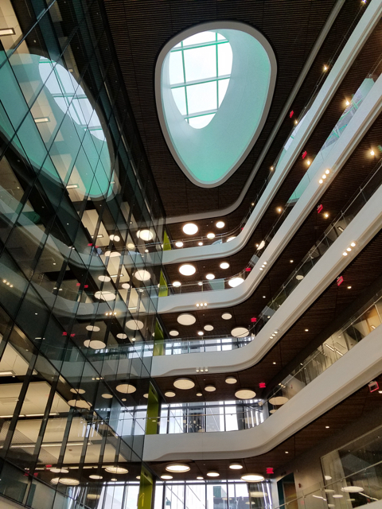
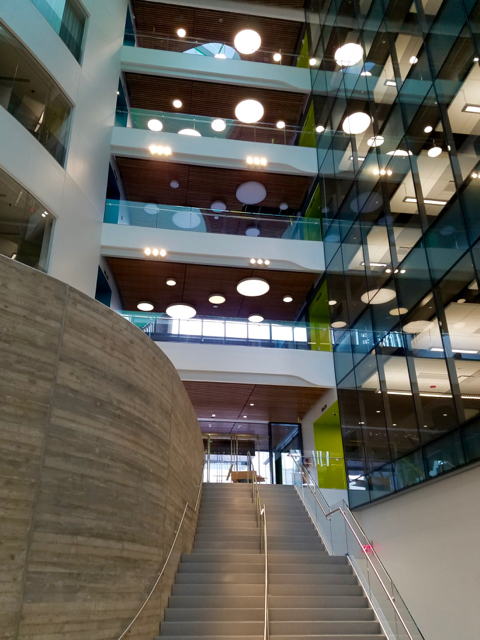
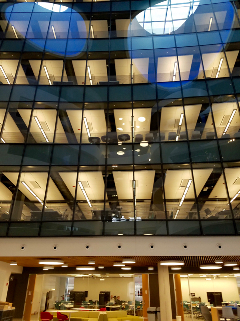
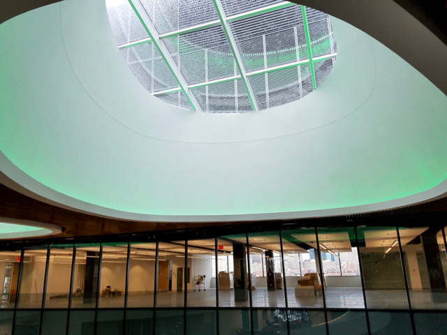
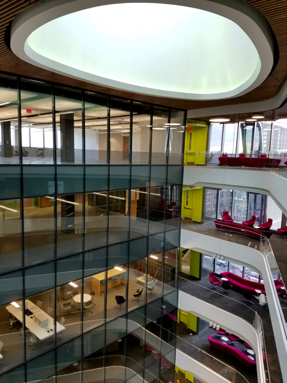
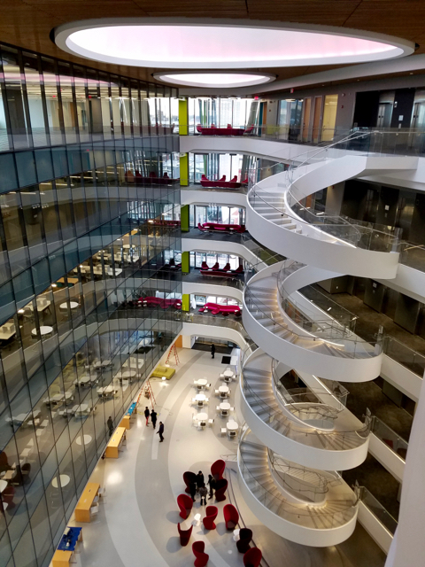
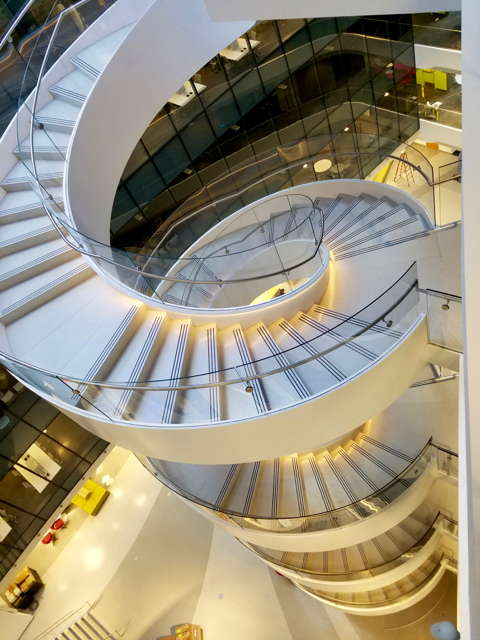
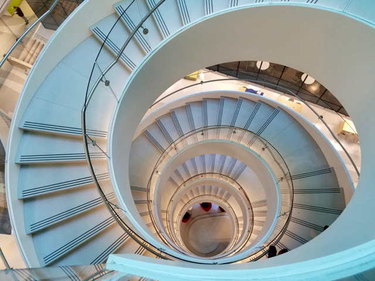

Cristina Nita-Rotaru
Professor of Computer Science Khoury College of Computer Sciences Northeastern University email: c.nitarotaru@northeastern.edu office: ISEC 626 Directions lab: Network and Distributed Systems Security [nds2] Research: network security, resilient distributed systems, automated testing and verification; applications: critical infrastructure, connected cars, blockchains |
``There is only one success - to be able to spend your life in your own way.'' Christopher Morley 
|
ISEC
Our lab is located on the 6th floor in the Interdisciplinary Science and Engineering Complex. Below there are a few photos I took before we moved in.
|  |  |  |
|  |  |  |
|  |  |  |
Send your comments and questions to Cristina Nita-Rotaru